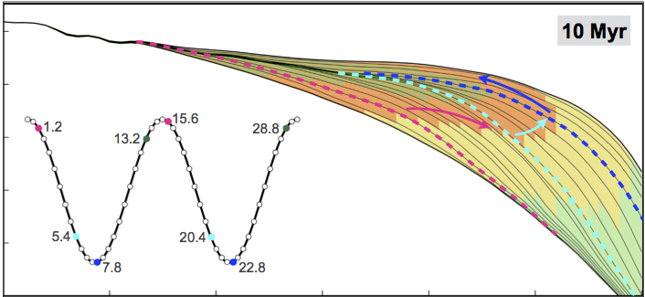
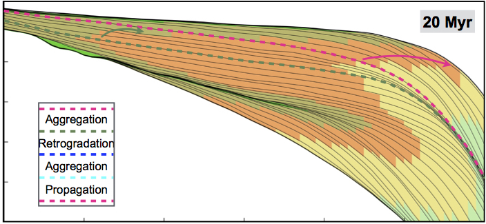
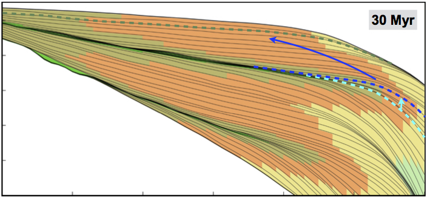

Landsat satellites images of the Wax Lake Outlet and Atchafalaya deltas from 1984 to 2014 EarthObservatory (USGS-NASA).
Deltaic depositional facies result from interacting dynamics processes (wave energy, tidal regime, currents, climate, tectonic), which modify and disperse fluvial clastic deposits. The complexity of environmental settings under which deltas exist results in a variety of vertical sequences that can form within the delta facies.
In this module, you will learn how to interpret deltaic stratigraphy based on systems tract, shoreline trajectory and accommodation vs sediment supply analysis. Using Badlands, you will quantitatively assess the role of sea-level fluctuations and subsidence rates on deltaic geometry evolution.
Preamble
Deltas are constructional coastal landforms with both subaerial and subaqueous components that are genetically associated with rivers discharging into a standing body of water, such as a lake, estuary, lagoon, sea, or the open-ocean shelf. A delta is usually built by a single river. Reworking of sediments accumulated at the river mouth by basinal processes (e.g., waves, tides, currents) should be slow enough to allow delta building to proceed. The river is the main source for sediment delivered to the delta, although in some wave-dominated settings, a significant portion may be transported by wave-driven currents from remote sources
Range of common shallow-water depositional systems in a coastal classification based on ratio of wave power to tidal power (from Steel & Milliken 2013)
Lecture resources
Deltas are amongst the most environmentally and economically important coastal sedimentary environments. Significant oil, gas, and groundwater resources have been exploited from deltaic formations. Historically, modern deltas have been prized by human civilizations for their high natural and agricultural productivity, rich biodiversity, and for the abundance of waterways that provide easy means of transportation. Deltas are ubiquitous: 21 of the world’s 25 largest rivers, which deliver 31% of total fluvial sediment reaching the ocean, have formed well-expressed deltas at the coast (Meade, 1996). As a result, ~ 25% of the world’s population lives within deltaic and wetland coastal systems (Syvitski et al., 2005)
In the 1980s, research on deltas moved from the development of depositional models based on modern highstand deltas, which are ultimately controlled by variations in sediment supply by the delta-building rivers, to sequence stratigraphic interpretations of deltaic evolution through multiple sea-level cycles (e.g., Van Wagoner et al., 1988).
Based on general morphology of the subaerial delta plain, deltas have typically been classified as fluvial-, wave-, or tide-dominated according to the dominant processes affecting sediment delivery, deposition, and dispersal (Galloway, 1975; Orton and Reading, 1993).
Some notes on Deltaic Environments and lecture materials are available below:
| HTML version (for Chrome or Safari) | PDF version |
The stratigraphic architecture of deltas is the end-result of complex interactions among upstream catchment processes that regulate the location and magnitude of the fluvial sediment discharge, and downstream basinal controls that include the shape and quantity of accommodation space for sediment accumulation and the type and energy of coastal processes that redistribute these sediments. Together, all of these controls determine the mode and degree of partitioning of sediment between the delta and the wider receiving basin.
  
Sequence stratigraphy analysis obtained with Badlands model.
The concepts of system tracts, shoreline trajectory and accommodation succession represent critical tools to the interpretation of shoreline and shelf carbonate and clastic sedimentary systems. It aids in the determination of the depositional setting of the component system tracts and enables the prediction of the extent and character of these sedimentary geometries, often at the same scale as the components of local hydrocarbon reservoirs. This enhances the stratigraphers ability to find, map and exploit hydrocarbon reservoirs more effectively.
The shoreline or shelf margin trajectory is the path taken by the shoreline or shallow shelf margin facies as they change position when a sedimentary basin fills. These trajectories are controlled by rates of change in base level (as expressed by rates of change in accommodation, or the sum of eustatic change and tectonic movement of the substrate), varying rates of sediment accumulation, and the slope and shape of the basin margin and floor and their depths. Evolving geometries of clinoformed margins have been used as standards to explain basin margin progradation. Essentially these trajectories are responsible for the retrogradational, progradational and aggradational stacking patterns.
The rate of change of accommodation (at the shoreline) and the rate of sediment supply are the primary factors controlling regression and transgression in the geological record, or retreat and advance of a coastal depositional system. We will discuss in this part of the module these three different concepts and see how they can be used to quantitatively assess numerical models of deltaic systems evolution.
| Part 1 HTML version (for Chrome or Safari) | PDF version |
| Part 2 HTML version (for Chrome or Safari) | PDF version |
For the labs
We will use Jupyter, a web application that allows you to create and share documents that contain live code, equations, visualizations and explanatory text. To access the module materials we will download via Kitematic a Docker container called todo. Please follow the documentation provided here on how to install the materials on your local computer or directly from the school computer labs.